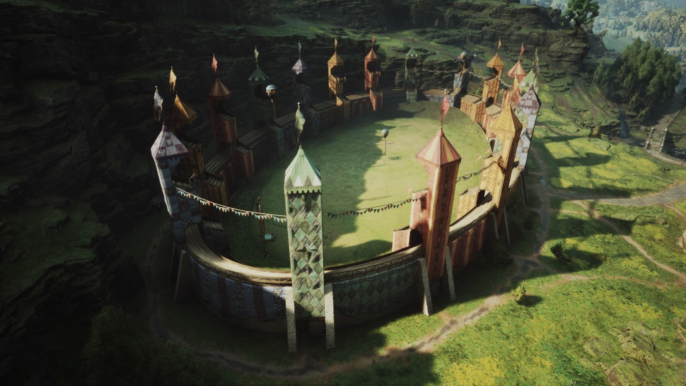
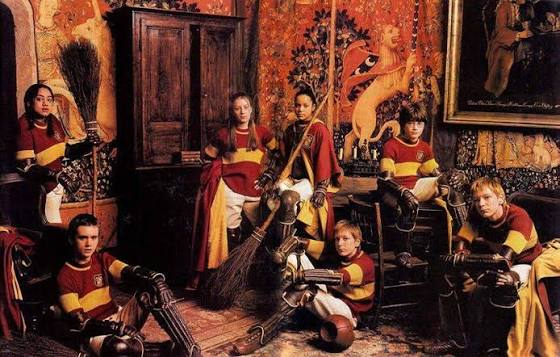
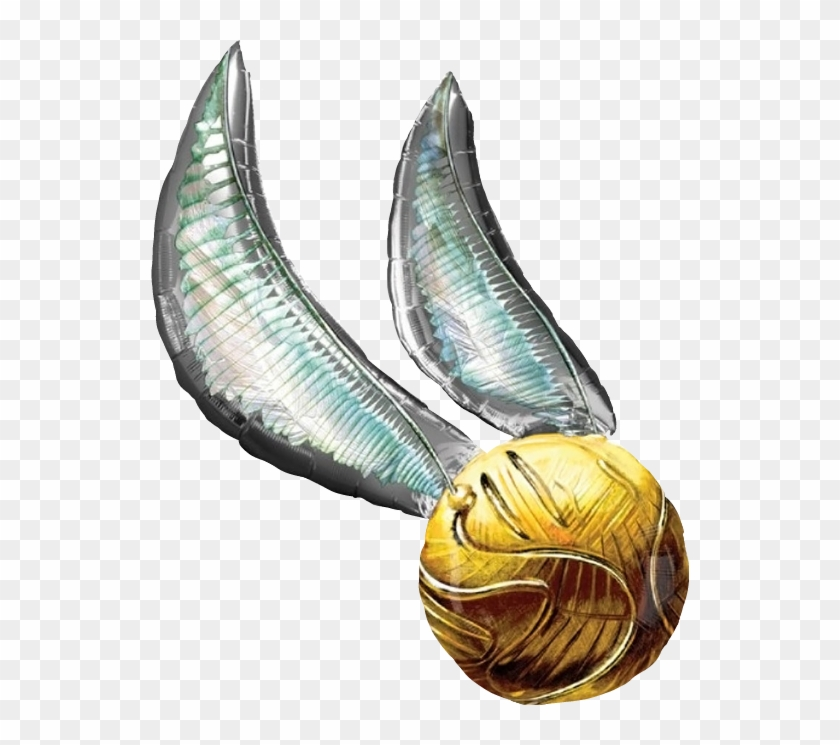

September 8, 2026

Excitement fills Hogwarts as the annual Quidditch season approaches. Captains from Gryffindor, Slytherin, Ravenclaw, and Hufflepuff have begun intensive training sessions to prepare their players for another year of thrilling competition.
Flying drills, tactical formations, and catching exercises are now part of the daily routine. Seekers continue practicing with the elusive Golden Snitch, while Chasers and Beaters sharpen their teamwork and precision on the pitch.

Professor Rolanda Hooch praised the students for their determination and sportsmanship. Fans across Hogwarts eagerly await the opening match, which promises spectacular aerial plays, fierce rivalries, and memorable moments that will echo through Hogwarts history.

Return to Daily Prophet